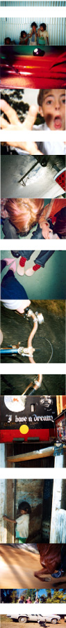

| |
GETTING SNAPPY
| |
It's an unusual idea - taking a disposable camera, documenting your life and then, without developing the film, sending the camera to noise - but one that has resulted in a unique collection that awaits your perusal in a book, newspapers and here online.
| |
Have you ever bought a single-use camera and found them able to flawlessly capture wedding portraits, important family occasions and black tie ceremonies? No, me neither.
On the other hand, they often produce more refreshing and raw snaps than the standard SLR - involving abstract and obscure subject matter, blurry composition and those spontaneous life moments that would have otherwise slipped by uncatalogued.
And that was exactly the type of stuff we were after when the call went out earlier in the year for noise's SNAPSHOT project - brought to you by Kodak, News Limited Sunday papers, the Centenary of Federation and the noise festival. No prior photographic experience was necessary, just a unique vision of life as a young Australian.
From the hundreds of cameras we received, we trawled through the resulting shots and have chosen a swag to be published this month in a special book, in Sunday newspapers across the country and a selection of artists and work profiles on the noise site.
"I loved how raw these images are, how they perfectly capture the moment," says Veda Dante, noise SNAPSHOT Editor, "and more importantly how young people are so arrested by the moment. They may not realise that they have a lot of power by thinking that way, but they do."
And talk about young people. Molly Fry's "Pool Table" photo is one of the more eye-catching works with its interesting cropping and rich, contrasting colours - you wouldn't know it was taken by a five year-old who likes to "sing, do ballet and go to Kinder". Then there's Deneale Perkins, the artist behind "Horse Run" who isn't just an interest through her use of the words "bonza" and "g'day" - she's captured a unique view of Australia in one of the best snaps from the collection.
"This generation of young people have a completely different approach to the way they see life - not because they don't understand and appreciate history or care about their future - they do," continues Dante. "It's just an amazing amount of confidence in their own expression."
Enough confidence for young Australians like Danny Grabham to take his great upside-down "Reflection" photo - another one of our noisy faves. See these visual treats and many more in one of SNAPSHOT's three outcomes this month - newspapers, a book and a whole bunch of the best, here online.
Keep a lookout for SNAPSHOT in Australia's Sunday newspapers including the Herald Sun (VIC), the Sunday Mail (QLD), the Sunday Territorian (NT), the Sunday Times (WA) and the Sunday Telegraph (NSW) during October.
Snapshot (the book) can be obtained for $19.95 from the Herald Sun Shop [(03) 9292-1234]. Send cheques or money orders (made out to "The Herald Sun") to:
THE HERALD SUN
Snapshot
PO Box 14730
Melbourne City Mail Centre
Victoria 8001
Return to the SNAPSHOT Project Homepage
(Psst... we reckon you'll also be interested in the FAKE ADS, BLACK+WHITE and HOW COMICS CAN CHANGE THE WORLD Projects)
|
|
|